The xdt99 IDEA plugin version 3.3 makes the IntelliJ IDEA IDE's advanced code assistance functionality available to TMS99xx assembly programs, GPL assembly programs, and TI BASIC and TI Extended BASIC programs.
Unlike the pattern-based Emacs mode, this plugin knows the rules of TMS99xx
assembly and GPL assembly and thus can highlight all errors that would cause the
xas99 or xga99 assembler to issue errors. For TI BASIC and TI Extended
BASIC, only some errors are detected.
The plugin should work in most Jetbrains IDEs, including the free community versions of IntelliJ IDEA and PyCharm. If you don't already have any specific Jetbrains IDE installed, we recommend using IntelliJ IDEA.
The plugin was developed with IntelliJ IDEA version 2021.2.3, but all versions from 2020.3 upwards should work. For older versions, we recommend the previous version 1.1 of the plugin.
Starting IntelliJ IDEA (or IDEA, for short) for the first time, we are greeted with the project selection window.
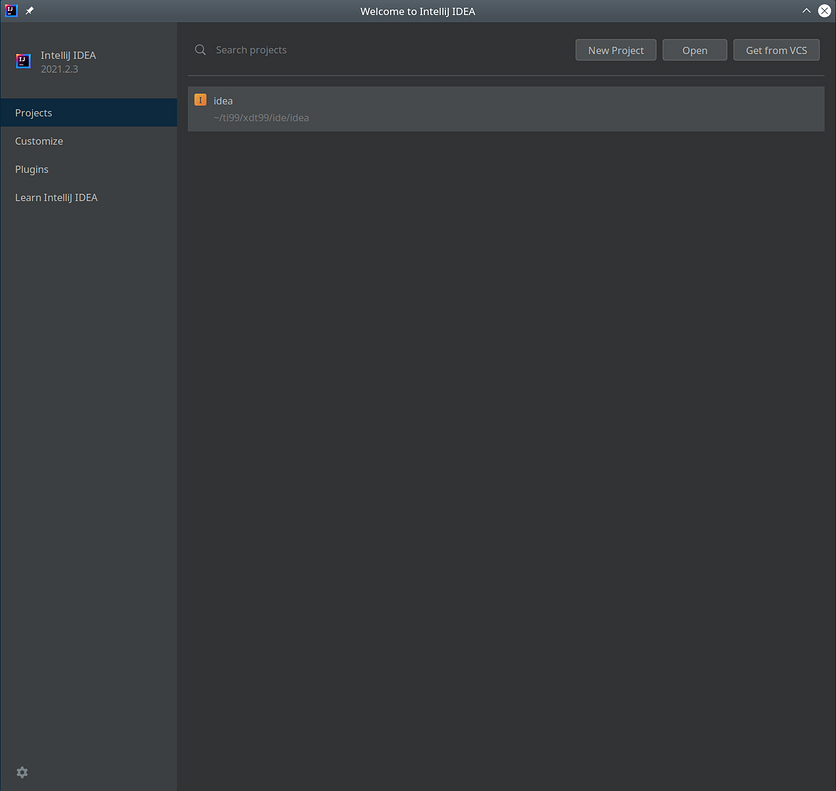
As part of the installation process, we then have to install the xdt99 IDEA plugin by selecting Plugins in the left pane of the window. After clicking the gear symbol on top, we choose Install from file ... and then select our plugin ZIP file.
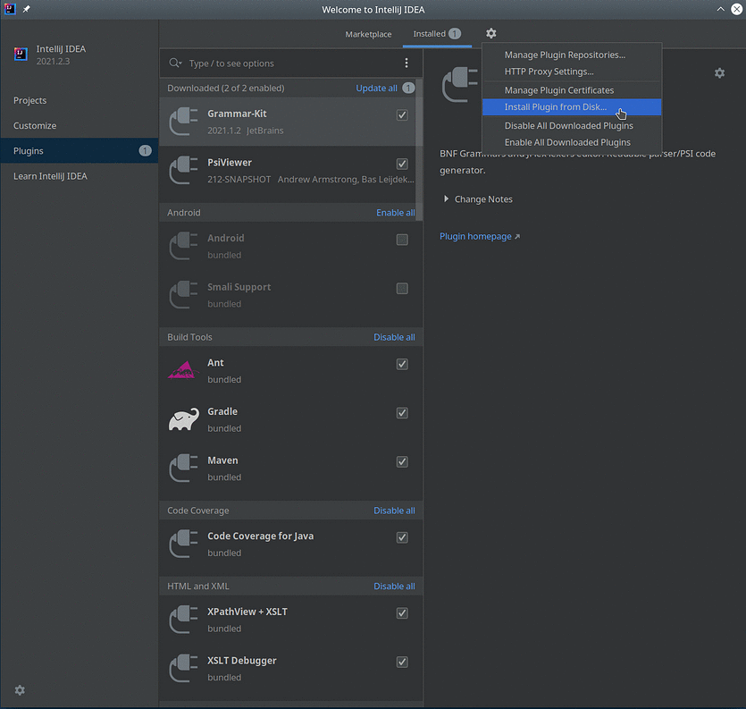
Restarting the IDE will activate the plugin.
IDEA offers various so-called keymaps that define which keys we have to press
to perform certain functions. To follow this manual, we recommend using the
Eclipse keymap by clicking Customize and then selecting Eclipse in the
Keymap drop down list. Users familiar with Jetbrains IDEs can keep their
usual keymap, of course.
To create a new empty project or a project with already existing sources, we click the Open ... button and then choose the directory where are sources should be or already are.
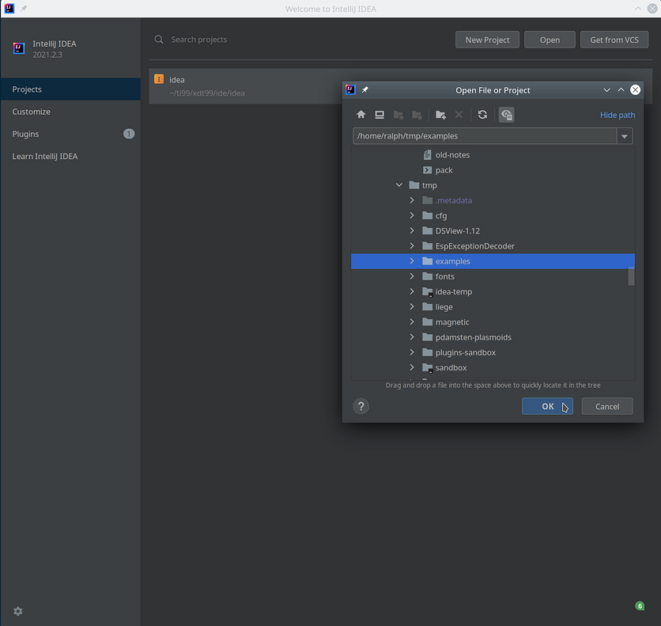
IMPORTANT! Do not use the New Project button.
If we opened projects in the past, their list will appear in this window as shortcuts. Clicking on one of the listed projects will open it.
For this tutorial, we select the examples/ directory of the xdt99 release,
where we modified some files for instruction purposes. After the project has
been created, IDEA shows the project view.
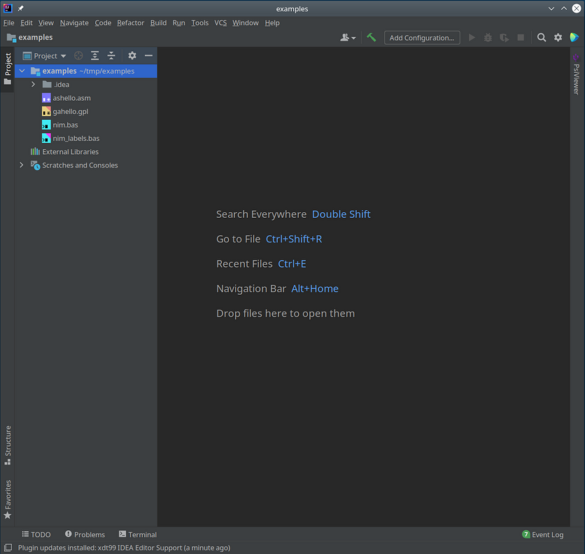
The left pane lists all the files contained in the project, i.e., in the project directory. Each xdt99 file has an icon attached to it that denotes the type of that file:
For each language, there are two different file types available: normal/strict syntax and relaxed syntax for assembly and GPL, and line numbers and labels for BASIC. To learn about relaxed syntax or BASIC with labels, please refer to the xdt99 manual.
Since the same extensions are attached to both variants of each language, the
IDE randomly chooses either file type when creating a new project or adding new
files to an existing project. To change the assigned file type of a given file,
we right-click on that file in the left pane and select Override file type
....
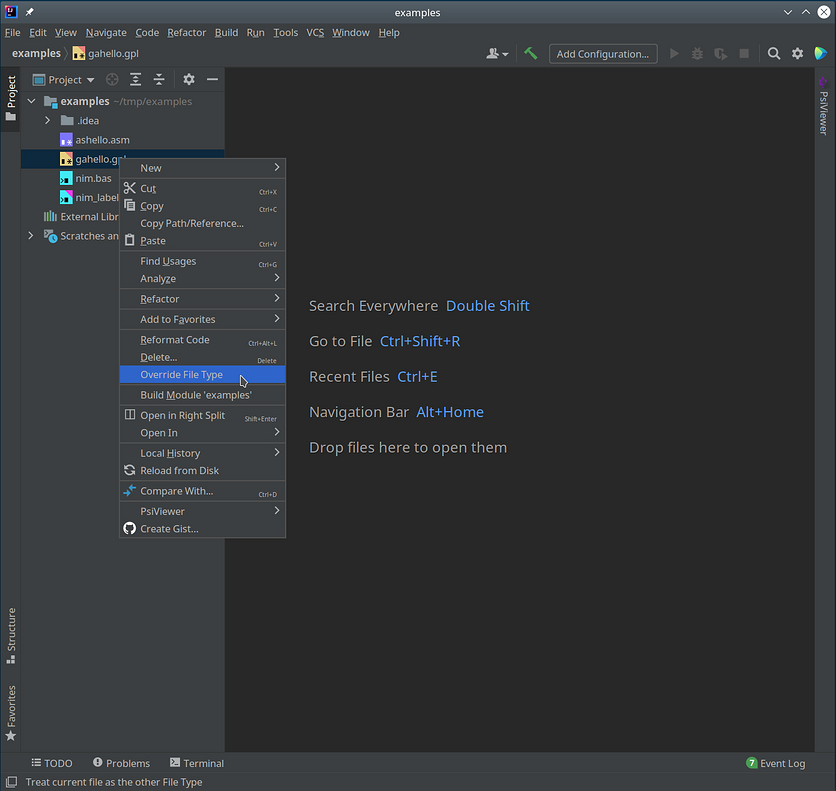
Unfortunately, the shown list of available file types is very long, and we have
to scroll right to the end, where we see the six xdt99 file types: Xas99 for
assembly, Xas99R for assembly with relaxed syntax, Xga99 for GPL, Xga99R
for GPL with relaxed syntax, Xbas99 for BASIC with line numbers, and Xbas99L
for BASIC with labels.
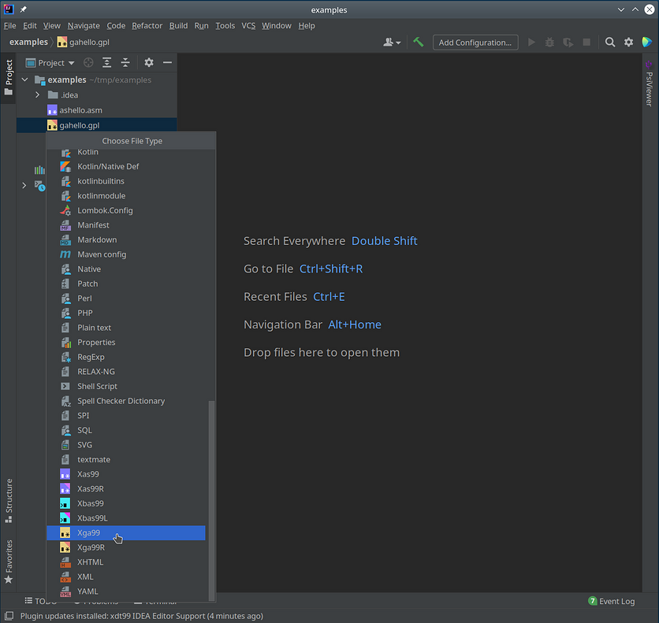
All chosen file types are saved in the project, so we have to do this reassignment only once.
If we want to switch projects, we first need to close the current project by selecting File - Close Project from the menu. After this, the project selection window is shown again.
Since the IDEA plugin features for TMS99xx assembly and GPL assembly are very similar, we will discuss both languages and all four variants together, referring to all of them as assembly.
In general, the plugin supports the entire instruction set of xas99 and
xga99, with the exception of syntax variants for xga99.
If we double-click on a file in the left pane, we will see its contents in the right pane. The most obvious feature of the plugin then is syntax highlighting, which colors certain parts of a given program differently.
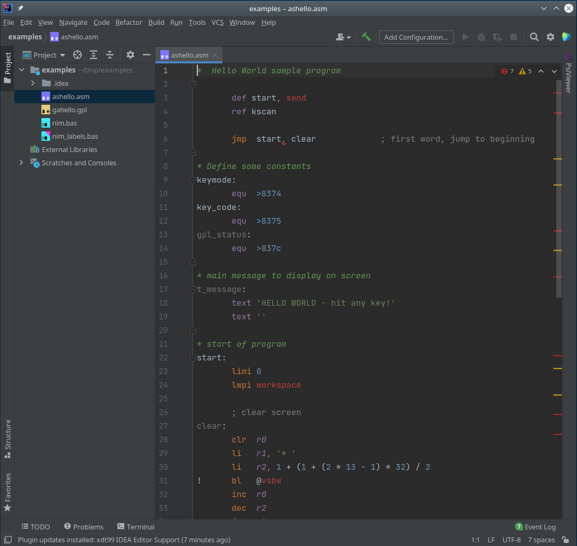
Also, syntax errors are marked by red squiggles, similar to those found in common word processors.
The complete list of markings that provide information about errors and warnings is shown here:
Hovering over any mark for errors or warnings provides additional information on why this part of the code has been flagged.
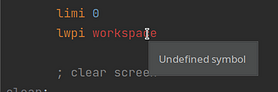
Please note that COPYed files that are not included in the project, e.g.,
standard xdt99 library files, will not be processed, and symbols referring to
definitions in such external files are shown as undefined, as in the example
above. To resolve external symbols, simply copy the those external files to the
project directory.
Symbols imported with a REF directive are defined, but further information
about such external symbols will not be available.
Syntax highlighting supports both light mode and dark mode, which may be activated in File - Settings - Appearance - Theme.
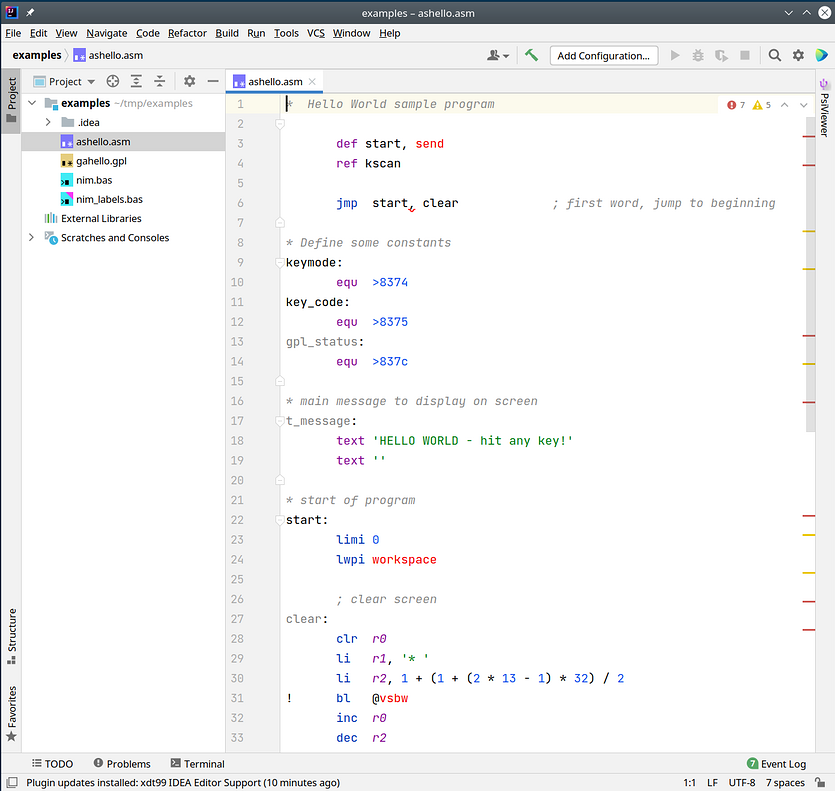
Individual colors might be changed in File - Settings - Color Settings and then one of the file types.
The semantic analysis of the IDEA plugin is not limited to syntax highlighting, though. If we place the cursor on any of the symbols in the code, we see that all occurrences of that symbol will be highlighted.

It is worth pointing out that symbols are not identified by a simple search.
Internally, IDEA builds a semantic model of the program, which tells it exactly
what each part of the program, such as a symbol, represents. We can best see
this if we keep the cursor on this symbol and then press Shift+F6, which
initiates inline renaming mode.
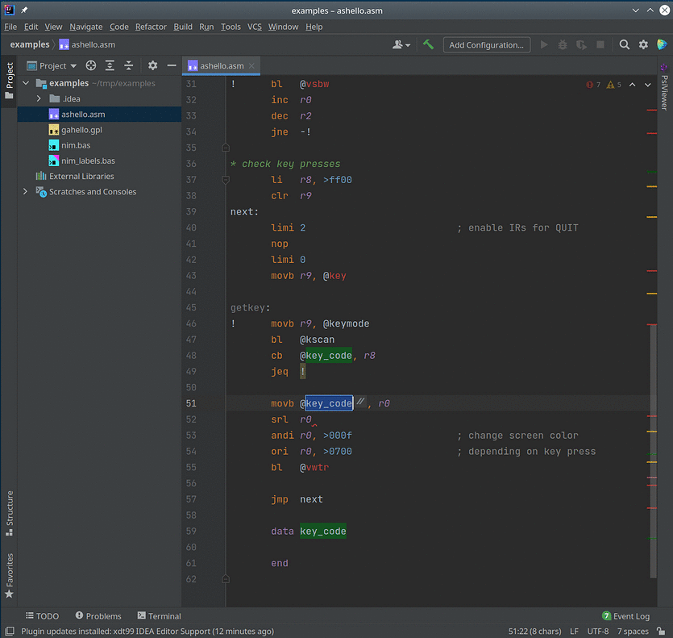
As we keep changing the symbol name, all other occurrences of that symbol, and only those, are safely modified in sync. Safe renaming refers to the fact that inline renaming does not affect strings, comments, or other symbols that merely contain a part of the renamed symbol,
Another very useful feature of this semantic understanding is locating the
definition of any symbol, where definition here means the location of the symbol
as label. Placing the cursor on any label, pressing F3 or selecting
Navigate - Declaration will jump from our original position to the definition
of the symbol as label.
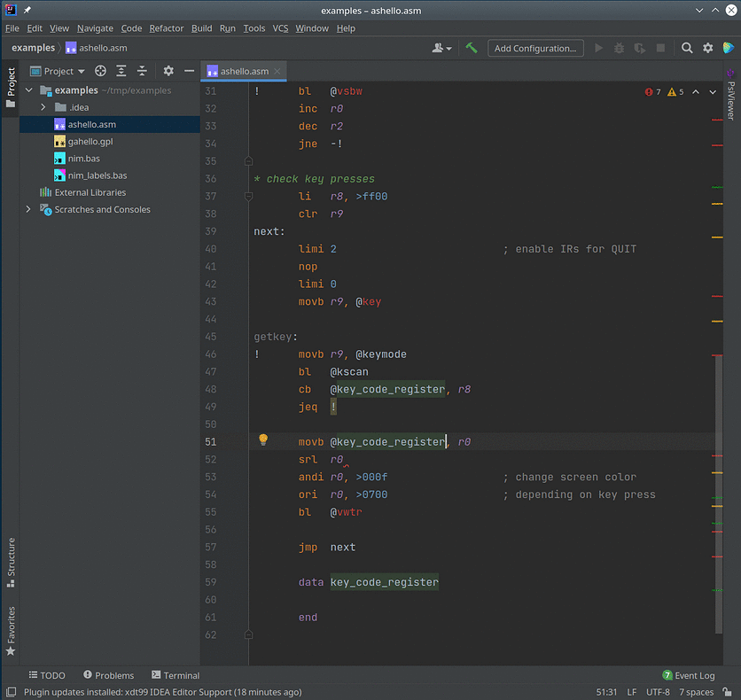
Conversely, we can navigate the other direction by pressing Ctrl+G or
selecting Edit - Find - Find Usages to find all usages of the symbol
definition under the cursor in our code.
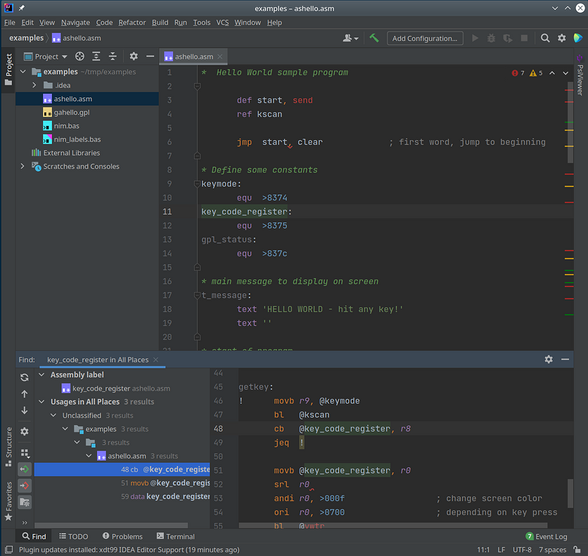
We can examine the list of usages in the bottom pane and jump to any find by double clicking.
To go back to our previous position, we press Alt+←, which works in any
context. We can also close the usages pane by clicking — in the top right
corner of the usages pane.
If we want to know the definition of a symbol but don't want to leave our current position in the file, we can hover the mouse pointer over that symbol, and a popup with the definition will appear.
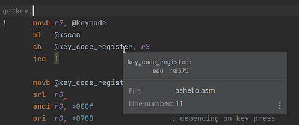
The popup also contains any comments directly preceding the definition, which might be comments provided additional information about the symbol.
And finally, if we do not remember which symbol we need to use at a given point
in our program, we might write partial prefix and then press Ctrl+Space to
invoke code completion.
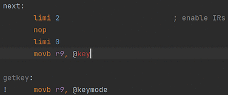
If there is only one possible completion, it will be automatically inserted into the program.
Code completion even suggests symbols when simply typing the start of a symbol, i.e., without explicitly invoking code completion. Again, if only one possible completion exists, it will be automatically inserted.
Symbols are tracked across all source files of a given file type within the
project. If we have split our program into multiple files -- be it for using
the COPY directive or for linking several files together -- we can still
navigate between files and rename symbols consistently.
IMPORTANT! It is recommended that for each file type, each project contains only files that belong to the same source unit.
In the left margin of our code we see line numbers and ranges, denoted by a
thin line that ends in small - symbols. If we click on either -, the
corresponding range is collapsed so that only the first line of that range
remain visible, and a + symbol replaces the - symbols.
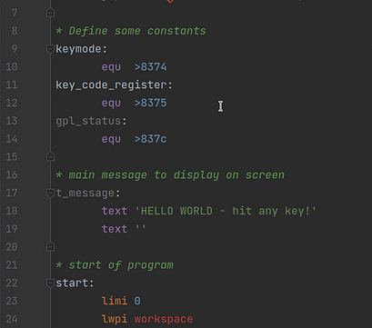
Each range extends from a group of line comments to the start of the next group of line comments, including the start and the end of the source, resp. The idea is that each important section of a program is introduced by a line comment explaining that section. During development, we can hide irrelevant code sections by collapsing their ranges, e.g., to move two separate parts of the code together on the screen.
When typing a program in IDEA, pressing Tab will automatically move the cursor
to the next field. Likewise, pressing Backspace will move the cursor to the
previous field or the end of existing text, whichever is reached first.
Pressing Enter will move the cursor to the mnemonic field in the next line.
To move the cursor to the label field, we can press Home-
IMPORTANT! When observing a different behavior, we recommend to check and experiment with the Editor - General - Smart Keys settings, in particular Enter - Smart Indent and Backspace.
If we type a paired character such as (, ', or ", the other character of
that pair, i.e., ), ', or ", is automatically inserted.
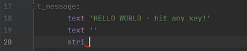
In this example, we only typed the first ' character, and the second one was
automatically inserted for us.
We can then normally type the rest of the expression or string. If we type the
closing ), ', or ", no new character is inserted, but the cursor advances
over the already present character. Also, when we position the cursor over such
a paired character, the other character is highlighted.
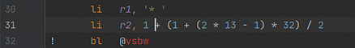
Selecting a few lines of our code and pressing Ctrl+/ or selecting Code -
Comment with line comment, we can comment and uncomment the selected lines
with ;.
If no lines are selected, the current line is commented or uncommented.
In case we are a rather sloppy developer writing more or less messy programs, we
can easily get help to tidy up our code by pressing Ctrl+Alt+L or selecting
Code - Reformat Code.
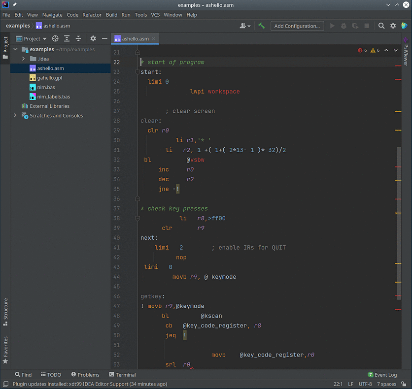
The exact rules, in particular the starting positions of each field, the character case, and possibly the syntax variant (normal or strict, i.e., one or none spaces), can be configured in File - Settings - Code Style - (xdt99 language).

IMPORTANT! Should at any time any of the above feature stop working, we recommend to rebuild the index by choosing File - Invalidate Caches from the menu.
The xdt99 IDEA plugin supports both line-based and label-based variants of TI
BASIC and TI Extended BASIC (or BASIC, for short). The label-based syntax is
a special syntax provided by the xbas99 tool.
The syntax highlighter colors different parts of BASIC programs according to their meaning.
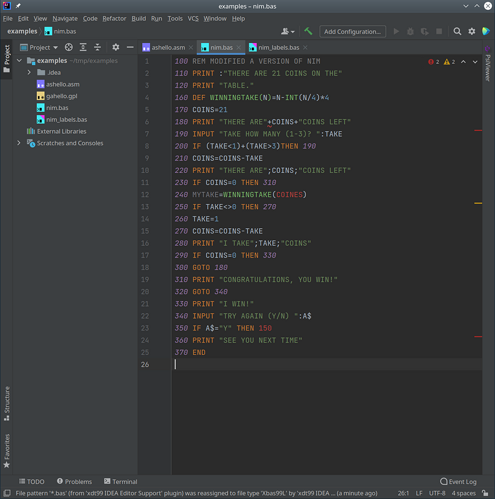
The highlighter also marks the following errors and warnings:
Hovering over any mark for errors or warnings provides additional information on why this part of the code has been flagged.
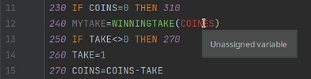
The plugin understands most of the TI BASIC and TI Extended BASIC syntax and reports many syntax errors, but it does not implement the complete BASIC grammar. As such, syntactically correct but nonsensical statements such as
10 CALL CLEAR(1):: CALL HCHAR(#1,"A"):: OPTION BASE 99
are not flagged.
What symbols are for assembly support, line numbers and variables are the BASIC units for which navigation and renaming is supported.
Placing the cursor on any line number
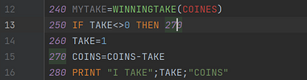
or variable
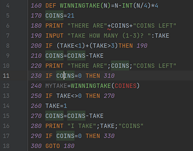
highlights all occurrences within the current BASIC program.
Similarly, pressing Shift+F6 activates inline renaming, which will safely
rename all instances of the currently selected line number or variable, without
affecting numbers, strings, or comments.
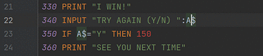
Similarly, with the cursor on any line number or variable, pressing Ctrl+B or
selecting Navigate - Declaration from the menu will navigate to the
definition of that line number or variable.
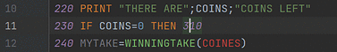
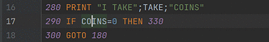
In case of a line number, definitions refers to the line with that line number, and in case of a variable, definition refers the first occurrence where that variable is written to.
Conversely, pressing Ctrl+Alt+B or selecting Edit - Find - Find Usages will
list all occurrences where the current line number or variable is used -- in
case of a variable that includes both reading and writing instances.
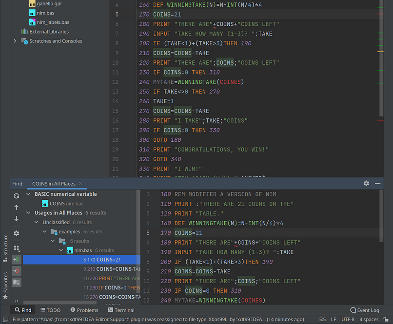
Mouse hovers aren't supported for BASIC, as the "definition" of either line number or variable doesn't really provide any useful context information.
If we are writing a BASIC program and we are unsure which variable we need to
use at a certain point, we can press Ctrl+Space to invoke code completion to
get a list of possible variables with a given prefix.
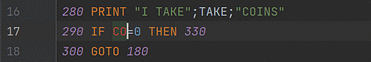
Unfortunately, there is one particular quirk for completing string variables.
When completion a string variable we not only have to specify a prefix, but we
also have to type a string symbol $ right after the cursor.
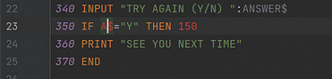
This special handling wouldn't be necessary if the $ symbol were at the
beginning of a string variable, but as it isn't, we'll have to live with that
quirk.
When we type a partial variable name, code completion is automatically invoked and suggests possible completions or, if there is only one completion, automatically inserts the completion. Sadly, this also doesn't work for string variables.
Obviously, code completion makes no sense for line numbers.
IMPORTANT! Unlike assembly labels, BASIC line numbers and variables are tracked for each file individually. Thus, we can have many different BASIC programs independently within one project.
Writing BASIC programs is straight-forward, so no special handling for Tab,
Enter, or Backspace is offered.
If we type a paired character such as ( or ", the other character of that
pair, i.e., ) or ", is automatically inserted.
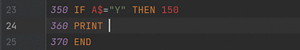
We can then normally type the rest of the expression or string. If we type the
closing ) or ", no new character is inserted, but the cursor advances over
the already present character. Also, when we position the cursor over such a
paired character, the other character is highlighted.
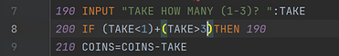
In case we are a rather sloppy developer writing more or less messy programs, we
can easily get help to tidy up our code by pressing Ctrl+Alt+L or selecting
Code - Reformat Code.
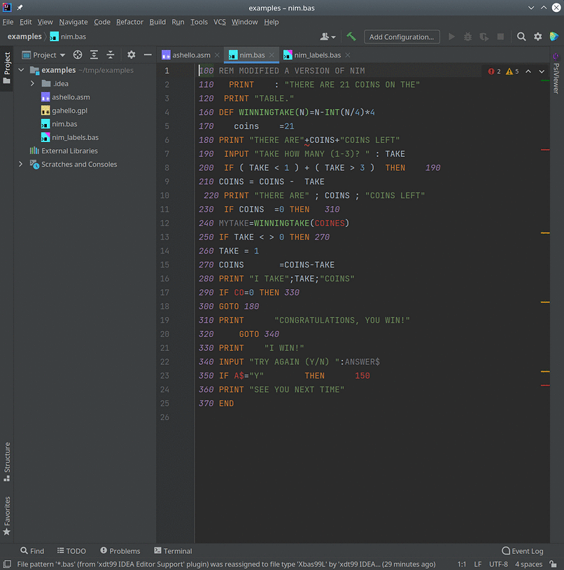
The only available formatting settings for BASIC concerns the character case.
The other available code style setting controls whether the programs in the project are TI BASIC programs or TI Extended BASIC programs.
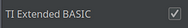
If the TI Extended BASIC option is unchecked, all TI Extended BASIC constructs used in the programs are flagged as errors. Note that after changing this setting, we might need a minor edit before the updated highlighting of the code takes effect.
IMPORTANT! Should at any time any of the above feature stop working, we recommend to rebuild the index by choosing File - Invalidate Caches from the menu.
BASIC with labels is identical to regular BASIC with line numbers, but replaces line numbers with labels.
There is no native support for BASIC with labels on the TI 99/4A, but the
xbas99 tool converts BASIC with labels into a regular BASIC programs.
The IDEA plugin offers the same features for BASIC with labels as for BASIC with line numbers.
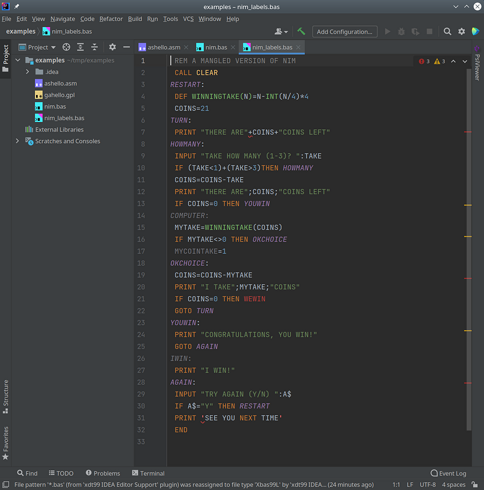
In addition, code completion for labels and marking unused labels is supported.
The xdt99 IDEA plugin is part of the TI 99 Cross-Development Tools. The tools are released under the GNU GPL, in the hope that TI 99 enthusiasts may find them useful.
Please email feedback and bug reports to the developer at r@ti99.pro, or use the issue tracker on the project GitHub page.